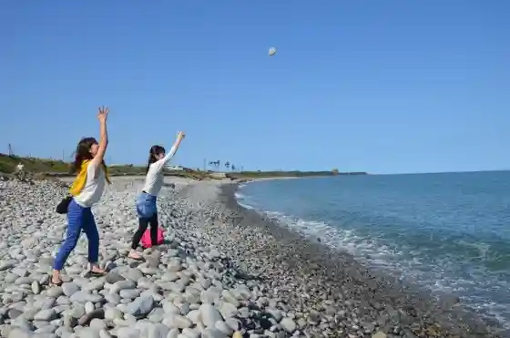
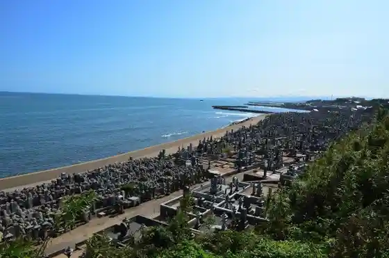
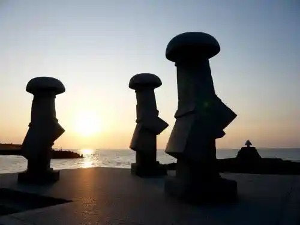

Roadside Station Poto Akasaki
Kotoura, Tottori · 0858-49-2020 · Official / source link
Nari Ishi no Hama
Kotoura, Tottori · 0858-55-7811 · Official / source link

Hanami Kata Bochi
Kotoura, Tottori · 0858-55-7811 · Official / source link

Nami Shigure Sandogasa
Kotoura, Tottori · 0858-55-7801 · Official / source link

Gyunyu Yoguruto Kojokengaku
Kotoura, Tottori · 0858-52-2211 · Official / source link
Ikkoganaru ~ Oyama Taki
Kotoura, Tottori · 0858-55-7801 · Official / source link
Tottori Prefectural Senjo Yama Shonen Nature no Ie
Kotoura, Tottori · 0858-55-7111 · Official / source link
Senjo Yama
Kotoura, Tottori · 0858-55-7801 · Official / source link
Senjo Yamaman Hon Sakura Park
Kotoura, Tottori · 0858-55-7811 · Official / source link
Kanzaki Shrine
Kotoura, Tottori · 0858-55-7811 · Official / source link
Toyosaka Shrine
Kotoura, Tottori · 0858-55-7811 · Official / source link
Yatsuhashi Coast
Kotoura, Tottori · 0858-52-1713 · Official / source link
Ho Soku Ajisai Park
Kotoura, Tottori · 0858-55-7801 · Official / source link
Roadside Station Kon no Ura
Kotoura, Tottori · Official / source link
Kachiku Kairyo Center Tottori Ranch
Kotoura, Tottori · 0858-55-7811 · Official / source link
Hikari no Kote
Kotoura, Tottori · 0858-55-7811 · Official / source link
Nikkan Yuko Koryu Park (Kaze no Oka)
Kotoura, Tottori · 0858-55-7811 · Official / source link
Ue Ho Man no Oyamazakura
Kotoura, Tottori · 0858-55-7811 · Official / source link
Kawamoto Ie House
Kotoura, Tottori · 0858-52-1161 · Official / source link
Tenno Mizu
Kotoura, Tottori · 0858-55-7811 · Official / source link
Hoki no Dai Shii
Kotoura, Tottori · 0858-55-7811 · Official / source link
Taka Isami
Kotoura, Tottori · 0858-53-0111 · Official / source link
Haku Yo Cho
Kotoura, Tottori · 0858-52-2203 · Official / source link
Akasaki Town Gyokyo Chokubai Center
Kotoura, Tottori · 0858-49-2020 · Official / source link
Kotoura Town Hall
Kotoura, Tottori · 0858-52-2111 · Official / source link